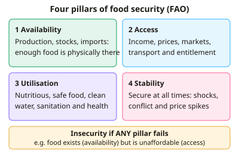

A-level Geography Year 13 · Topic 19
The future of food
The future of food explores how to feed a growing world population sustainably.
We will study global food security and insecurity, and how food production systems have changed.
Then we look at farming's environmental impacts, food trade and waste, new technologies, and the big debates about diets and land use.
- 6 subtopics
- 282 questions
- Free: 19.1 notes and 10 questions
In this topic
- 19.1Global food supply, demand and patterns of food security and insecurityFree below · 32 questions
- 19.2Food production systems: Green Revolution, intensification and agribusinessOpen in Full Marks · 37 questions
- 19.3Environmental impacts of agriculture and climate effects on food productionOpen in Full Marks · 69 questions
- 19.4Food trade, supply chains, food waste and food geopoliticsOpen in Full Marks · 31 questions
- 19.5Technology and sustainable food futures: GM crops, vertical farming, alternative proteinsOpen in Full Marks · 38 questions
- 19.6Food debates: diets, land use and feeding a growing populationOpen in Full Marks · 75 questions
19.1 · Free notes
Global food supply, demand and patterns of food security and insecurity

Key points
- Food security (FAO) exists when all people, at all times, have physical, social and economic access to sufficient, safe and nutritious food that meets their dietary needs. It rests on four pillars: availability, access, utilisation and stability.
- Food insecurity results when any pillar fails. Food can be available nationally yet unaffordable (an access failure), or secure one year and not the next (a stability failure).
- Demand is rising because of population growth (about 8.2 billion in 2025, projected to reach about 9.7 billion by 2050), rising incomes, urbanisation and the nutrition transition towards more meat, dairy and processed food. The FAO has estimated that output must rise by roughly 50% by 2050.
- Supply depends on land, water, technology, climate and trade. A few staples (wheat, rice, maize) provide over half of global calories, and a handful of exporting countries dominate trade in them. This makes supply vulnerable to price shocks and export bans (2007–08, 2010–11).
- Measuring hunger: the prevalence of undernourishment (PoU) is the % of people with insufficient calories, so 800 million of 8 billion = 10%. The Global Hunger Index combines undernourishment, child stunting, child wasting and child mortality. The IPC scale classifies acute insecurity, with Phase 5 meaning famine.
- Global pattern: Sub-Saharan Africa has the highest prevalence (about 20%). Asia, especially South Asia, has the largest absolute number of hungry people. Roughly 700 million people are chronically undernourished, and SDG 2 (Zero Hunger by 2030) is off track.
- Causes of insecurity: poverty, conflict (Sudan, Yemen, Gaza), climate shocks, weak infrastructure, poor governance, insecure land tenure and price volatility. Famine has been confirmed in parts of Sudan and Gaza in 2024–25, showing the role of conflict.
- Amartya Sen's entitlement theory holds that famine is mainly a failure of access, not total supply. Malthus (neo-Malthusians) argued that population outgrows food supply, whereas Boserup argued that population pressure drives innovation and intensification.
- Malnutrition has a double burden: undernutrition (stunting, wasting, micronutrient deficiency, or 'hidden hunger') alongside overnutrition (over 1 billion people live with obesity). Low-income countries are affected by both as diets shift.
- Food loss and waste: about one-third of food produced is lost or wasted. Losses occur mainly after harvest in low-income countries (poor storage and transport) and at retail and consumer level in high-income countries.
- Diet and land use: meat and dairy have high feed conversion ratios (for example about 8 kg of feed per 1 kg of beef gain), so rising meat demand, as in China, raises pressure on land, water and grain supplies.
In more detail
- Hunger: about 733 million people faced hunger in 2023.
- The double burden: over a billion people worldwide are now obese, while hundreds of millions go hungry.
- Four pillars of food security: availability, access, utilisation and stability.
- Famine: the most severe level of food insecurity, declared using the IPC classification, as in parts of Sudan and Gaza.
- Patterns: food insecurity is concentrated in sub-Saharan Africa, South Asia and conflict zones.
Practice
Global food supply, demand and patterns of food security and insecurity: 10 questions
Pick an answer to check it, or open the answer for the explanation.
1. Which of the following is NOT one of the four pillars of food security identified by the FAO?
- Availability
- Utilisation
- Stability
- Self-sufficiency
Show answer
D: Self-sufficiency. The four pillars are availability, access, utilisation and stability. Self-sufficiency is a national policy aim, not a pillar; a country can be food secure by importing food.
2. In one year 800 million of a world population of 8.0 billion are undernourished. What is the prevalence of undernourishment?
- 5%
- 1%
- 25%
- 10%
Show answer
D: 10%. Prevalence = (800 million ÷ 8,000 million) × 100 = 10%.
3. Amartya Sen argued that famines mainly occur because of:
- Lack of high-yielding crop varieties
- Too little farmland worldwide
- Population growth always outstripping food supply
- Failure of entitlements: people cannot access food even when it exists
Show answer
D: Failure of entitlements: people cannot access food even when it exists. Sen showed that famines can occur when food is available nationally but people lack the income or rights (entitlements) to obtain it. This is an access failure, not a supply failure.
4. Which set of indicators is used to calculate the Global Hunger Index?
- Life expectancy, fertility, food prices, urbanisation
- Undernourishment, child stunting, child wasting, child mortality
- Calorie supply, obesity, GDP per capita, literacy
- Food imports, rainfall, crop yield, population density
Show answer
B: Undernourishment, child stunting, child wasting, child mortality. The GHI combines four indicators: the proportion of undernourished people, child stunting, child wasting and child mortality.
5. Which statement about the global pattern of food insecurity is most accurate?
- Latin America has more undernourished people than Asia
- Sub-Saharan Africa has the highest prevalence; Asia has the most people in total
- Prevalence is highest in Europe and Central Asia
- North America has the highest prevalence of undernourishment
Show answer
B: Sub-Saharan Africa has the highest prevalence; Asia has the most people in total. Sub-Saharan Africa has the highest proportion undernourished (about 20%), but Asia's much larger population means it has the greatest absolute number of hungry people.
6. A country produces 600 Mt of food and 30% is lost or wasted. How much food is lost or wasted?
- 180 Mt
- 60 Mt
- 200 Mt
- 18 Mt
Show answer
A: 180 Mt. 30% of 600 Mt = 0.30 × 600 = 180 Mt.
7. Which statement best represents Ester Boserup's view of population and food supply?
- Famine is the inevitable result of rising population
- Population pressure stimulates agricultural innovation and intensification
- Population grows geometrically while food grows arithmetically
- Food supply is unaffected by population size
Show answer
B: Population pressure stimulates agricultural innovation and intensification. Boserup argued that rising population density forces farmers to intensify and innovate. The geometric-versus-arithmetic idea is Malthus's.
8. The 'nutrition transition' in rapidly developing countries describes:
- A fall in calorie intake as incomes rise
- A shift towards more meat, dairy, oils and processed foods as incomes rise
- A move from imported to locally grown staples
- The adoption of vegetarian diets in cities
Show answer
B: A shift towards more meat, dairy, oils and processed foods as incomes rise. As incomes and urbanisation rise, diets shift from staples to meat, dairy, sugar and fats. This raises demand for land and feed grain and increases obesity.
9. In 2010 Russia banned wheat exports after a drought and heatwave. Which pillar of food security does this best illustrate being threatened?
- Stability, as supply shocks and price spikes hit importers
- Utilisation, as food safety fell
- Availability within Russia only
- Self-sufficiency in importing countries
Show answer
A: Stability, as supply shocks and price spikes hit importers. The export ban cut world supply and raised prices, hitting wheat-importing countries such as Egypt. This is a stability and access shock caused by a failure in one major exporter.
10. Country X has 3,400 kcal per person per day available but 15% of people are undernourished. The best explanation is:
- The population is too small to need the food
- Food supply is too low for the population
- Undernourishment cannot occur when supply exceeds need
- Food is available but unequally accessed because of poverty or distribution
Show answer
D: Food is available but unequally accessed because of poverty or distribution. Average supply exceeds typical needs (about 2,100–2,500 kcal), so hunger here reflects poor access: low incomes, inequality or weak distribution, not a lack of availability.
Keep going in Full Marks
Full Marks has 32 questions on Global food supply, demand and patterns of food security and insecurity (22 more than here), set out in practice levels. You also get notes and 3D models for all 6 subtopics of The future of food, plus games, timed exams and past papers.
On your exam board
- OCR ATopic 3.4: Geographical debates: future of food
- CambridgeTopic 11: Production, location and change
Not in the AQA and Edexcel specifications.